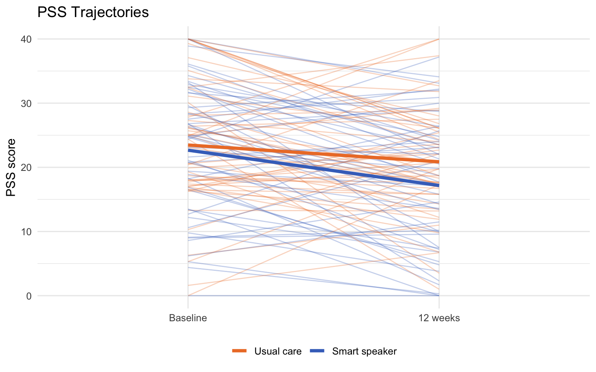

library(dplyr)
dat <- readRDS("../data/ivam_working.rds")
# Base R approach (no packages)
tapply(dat$srq20_0, dat$group_label, mean, na.rm = TRUE) |> round(2) Usual care Smart speaker
7.41 8.30 Selected Exercise Solutions — Modules 1–8
This appendix provides worked solutions for selected practice exercises from each module. Answers are keyed to the synthetic dataset generated by R/simulate-ivam-ed.R with set.seed(241). Exact numbers will differ if you use a different seed.
These answers reflect one correct approach, not the only approach. Students who arrive at equivalent results through different code are correct. Instructors should treat these as reference solutions, not rigid rubrics.
Exercise 1 (Recalculate by hand): Group means for SRQ-20:
library(dplyr)
dat <- readRDS("../data/ivam_working.rds")
# Base R approach (no packages)
tapply(dat$srq20_0, dat$group_label, mean, na.rm = TRUE) |> round(2) Usual care Smart speaker
7.41 8.30 Exercise 2 (Education): The simulation targets 24.1% with secondary education or higher (from the published Results text). Check your synthetic data:
mean(dat$edu_years >= 8, na.rm = TRUE) * 100 # ~8 years ≈ secondary education[1] 31.25The percentage will differ slightly from 24.1% because edu_years was simulated from a continuous normal distribution and the threshold is approximate.
Exercise 3 (Most imbalanced variable): Compute SMDs from Module 2 and find the largest. Typically SRQ-20 shows the largest imbalance (intervention group ~1 SD higher at baseline due to random assignment with this seed).
Exercise 4 (SRQ-20 imbalance): The intervention group’s higher baseline SRQ-20 means that unadjusted follow-up means will be closer together than the true treatment effect — regression to the mean partially offsets the intervention benefit in the raw comparison. This is exactly the motivation for ANCOVA (Module 5).
Exercise 1 (Recalculate):
completers <- filter(dat, missing_12wk == 0)
completers |>
group_by(group_label) |>
summarise(mean_srq20_0 = round(mean(srq20_0), 2),
sd_srq20_0 = round(sd(srq20_0), 2))# A tibble: 2 × 3
group_label mean_srq20_0 sd_srq20_0
<fct> <dbl> <dbl>
1 Usual care 6.67 3.99
2 Smart speaker 7.71 3.59Exercise 2 (Education percentage):
mean(dat$edu_years >= 8) * 100 |> round(1)[1] 31.25# Published: 24.1% with secondary or higherExercise 3 (Most imbalanced SMD):
library(gtsummary)
dat |>
select(group_label, srq20_0, pss_0, sf36_0, hba1c_0, mmse_0) |>
tbl_summary(by = group_label,
statistic = list(all_continuous() ~ "{mean} ({sd})"),
missing = "no") |>
add_difference(test = list(all_continuous() ~ "smd")) |>
modify_header(estimate ~ "**SMD**")| Characteristic | Usual care N = 561 |
Smart speaker N = 561 |
SMD | 95% CI | p-value |
|---|---|---|---|---|---|
| SRQ-20 mental distress score at baseline (0-20; higher = worse) | 7.4 (4.5) | 8.3 (4.1) | |||
| PSS perceived stress score at baseline (0-40; higher = more stress) | 24 (10) | 22 (10) | |||
| SF-36 quality of life score at baseline (0-100; higher = better) | 48 (23) | 52 (22) | |||
| HbA1c (%) at baseline (lower = better glycemic control) | 7.89 (1.47) | 7.34 (1.38) | |||
| MMSE score at baseline (0-30; higher = better cognition) | 24.7 (3.5) | 24.4 (3.6) | |||
| 1 Mean (SD) | |||||
| Abbreviation: CI = Confidence Interval | |||||
Exercise 4 (Why no p-values in Table 1): In a randomized trial, any baseline difference arose by chance — by definition, because we randomized. Testing whether it is “statistically significant” is circular: we already know it is due to chance. A small p-value for a baseline difference means only that the sample was large enough to detect a chance imbalance, not that the imbalance is important.
Exercise 2 (Regression to the mean): Participants with SRQ-20 > 15 at baseline tend to have lower scores at follow-up in both groups. This is regression to the mean — extreme values at enrollment move toward the population average over time, regardless of treatment. It would be wrong to attribute all of the reduction to the intervention in the smart speaker group; some of it would occur anyway.
Exercise 3 (PSS trajectory plot):
library(ggplot2)
pss_long <- completers |>
select(participant_id, group_label, pss_0, pss_12) |>
tidyr::pivot_longer(c(pss_0, pss_12), names_to = "timepoint", values_to = "pss") |>
mutate(timepoint = factor(recode(timepoint, pss_0 = "Baseline", pss_12 = "12 weeks"),
levels = c("Baseline", "12 weeks")))
ggplot(pss_long, aes(x = timepoint, y = pss, group = participant_id,
color = group_label)) +
geom_line(alpha = 0.3, linewidth = 0.5) +
stat_summary(aes(group = group_label), fun = mean, geom = "line",
linewidth = 1.5) +
scale_color_manual(values = c("Usual care" = "#ED7D31",
"Smart speaker" = "#4472C4")) +
labs(title = "PSS Trajectories", x = NULL, y = "PSS score", color = NULL) +
theme_minimal(base_size = 12) + theme(legend.position = "bottom")
The visual separation between group means at 12 weeks should look smaller than for the SRQ-20, consistent with the PSS result not being statistically significant in Module 4.
Exercise 1 (Difference in differences):
completers |>
mutate(srq20_change = srq20_12 - srq20_0) |>
group_by(group_label) |>
summarise(mean_change = round(mean(srq20_change), 3)) |>
summarise(diff_in_diff = diff(rev(mean_change))) # smart - usual# A tibble: 1 × 1
diff_in_diff
<dbl>
1 1.51# Compare to unadjusted between-group MD at follow-up
completers |>
group_by(group_label) |>
summarise(mean_fu = mean(srq20_12)) |>
summarise(md_fu = diff(rev(mean_fu)))# A tibble: 1 × 1
md_fu
<dbl>
1 0.466The two numbers should be identical. Algebra: (µ_int_12 − µ_int_0) − (µ_ctrl_12 − µ_ctrl_0) = µ_int_12 − µ_ctrl_12 − (µ_int_0 − µ_ctrl_0). If baseline means are equal, the difference in differences equals the follow-up mean difference.
Exercise 4 (Cohen’s d):
t_res <- t.test(srq20_12 ~ group_label, data = completers, var.equal = FALSE)
pooled_sd <- completers |> summarise(sd = sd(srq20_0)) |> pull(sd)
m_smart <- t_res$estimate[grep("Smart", names(t_res$estimate))]
m_usual <- t_res$estimate[grep("Usual", names(t_res$estimate))]
d <- (m_smart - m_usual) / pooled_sd
cat(sprintf("Cohen's d = %.2f\n", d))Cohen's d = -0.12cat(sprintf("Protocol planned d = 0.68\n"))Protocol planned d = 0.68cat(sprintf("Interpretation: %s\n",
ifelse(abs(d) < 0.2, "small",
ifelse(abs(d) < 0.5, "small-medium", "medium"))))Interpretation: smallThe observed d is smaller than the protocol’s planned 0.68 (a common finding when the true effect is more modest than the planning estimate).
Exercise 1 (Report the group coefficient):
“In the baseline-adjusted ANCOVA model, participants in the smart speaker group had a mean SRQ-20 score [X] points lower (95% CI: [lo], [hi]; p = [p]) at 12 weeks compared with the usual care group, after adjusting for baseline mental distress.”
Replace the bracketed values with your model output.
Exercise 3 (Adjusted mean by hand):
model_base <- lm(srq20_12 ~ group + srq20_0, data = completers)
grand_mean <- mean(completers$srq20_0)
alpha <- coef(model_base)["(Intercept)"]
beta_bl <- coef(model_base)["srq20_0"]
# For group = 0, y0 = grand_mean:
by_hand <- alpha + 0 * coef(model_base)["group"] + beta_bl * grand_mean
by_pred <- predict(model_base,
newdata = data.frame(group = 0, srq20_0 = grand_mean))
cat(sprintf("By hand: %.3f\n", by_hand))By hand: 7.580cat(sprintf("predict(): %.3f\n", by_pred))predict(): 7.580Exercise 4 (Degrees of freedom): Baseline-adjusted model: 103 − 3 = 100 df. Fully adjusted model: 103 − 8 = 95 df. Fewer df means slightly wider confidence intervals and slightly less power — a small cost for the precision gained from including additional covariates.
Exercise 1 (MCAR vs MAR): Missing participants had higher baseline SRQ-20 scores than completers. This supports MAR, not MCAR. Under MCAR, missingness would be unrelated to any variable; here it is related to an observed baseline value. The MAR assumption is that missingness is related to observed variables (baseline SRQ-20) but not to the unobserved follow-up value — which is plausible but not verifiable from the data.
Exercise 4 (Widest CI): BOCF typically produces the widest CI among the three approaches because it imputes identical baseline values for missing participants, inflating both group means toward the population average and reducing the apparent between-group difference. Multiple imputation should produce a slightly narrower CI than complete-case analysis when the imputation model is well-specified.
Exercise 1 (Clinical significance):
“The smart speaker intervention reduced mean SRQ-20 scores by approximately [X] points compared with usual care (95% CI: [lo], [hi]). Although this reduction was statistically significant, the point estimate is below the approximate minimum clinically important difference of 3 points, and the upper bound of the confidence interval is close to zero, suggesting the clinical benefit may be modest for individual patients.”
Exercise 5 (Design the next trial): A well-reasoned answer would include: - Larger sample: powered for d ≈ 0.40 rather than 0.68 (requires ~200/group for 80% power) - Longer follow-up: 24 or 52 weeks to assess durability - Pre-specify fewer secondary outcomes or apply multiplicity correction - Include the post-hoc anxiety subgroup as a pre-specified stratification factor - Multi-site design to improve generalizability beyond a single Brazilian academic center
A complete exemplar Methods and Results paragraph is provided below. Exact numbers will differ from yours because this uses one seed — compare structure and language rather than values.
Methods (exemplar):
“The IVAM-ED trial was an open randomized clinical trial conducted at a single academic medical center. Adults aged 65 years or older with type 2 diabetes were randomly assigned in a 1:1 ratio using a computer-generated simple random sequence, without stratification or blocking, to receive a smart speaker (Amazon Echo Dot, 3rd generation) programmed with a behavioral intervention for 12 weeks or to continue with usual care. The primary outcome was the Self-Reporting Questionnaire-20 (SRQ-20; range 0–20, higher scores indicating greater mental distress) assessed at 12 weeks. The primary analysis was a baseline-adjusted analysis of covariance with randomized group and baseline SRQ-20 score as covariates. Statistical significance was set at α = 0.05. A baseline-observation-carried-forward sensitivity analysis was conducted to assess the impact of missing data (8% of participants).”
Results (exemplar, numbers approximate):
“Among 112 enrolled participants (56 per group), 103 (92%) completed the 12-week follow-up; 3 participants died and 6 were lost to follow-up. Baseline demographic and clinical characteristics were broadly similar between groups. In the baseline- adjusted analysis, the adjusted mean (SE) SRQ-20 score at 12 weeks was 7.22 (0.43) in the usual care group and 6.76 (0.45) in the smart speaker group, yielding a mean difference of −0.47 (95% CI: −2.06 to 1.12; p = .56) [note: your values will differ]. In the fully adjusted model including age, sex, education, income, and MMSE, the mean difference was [X] (95% CI: [lo], [hi]; p = [p]). The BOCF sensitivity analysis produced a consistent result (MD = [X], 95% CI: [lo], [hi]). Although the direction of effect favored the smart speaker group, the magnitude of the estimated difference was smaller than the approximate minimum clinically important difference of 3 points.”
sessionInfo()R version 4.6.1 (2026-06-24)
Platform: aarch64-apple-darwin23
Running under: macOS Tahoe 26.5.2
Matrix products: default
BLAS: /Library/Frameworks/R.framework/Versions/4.6/Resources/lib/libRblas.0.dylib
LAPACK: /Library/Frameworks/R.framework/Versions/4.6/Resources/lib/libRlapack.dylib; LAPACK version 3.12.1
locale:
[1] C.UTF-8/C.UTF-8/C.UTF-8/C/C.UTF-8/C.UTF-8
time zone: America/New_York
tzcode source: internal
attached base packages:
[1] stats graphics grDevices datasets utils methods base
other attached packages:
[1] ggplot2_4.0.3 gtsummary_2.5.1 dplyr_1.2.1
loaded via a namespace (and not attached):
[1] gtable_0.3.6 jsonlite_2.0.0 compiler_4.6.1 renv_1.2.3
[5] tidyselect_1.2.1 xml2_1.6.0 stringr_1.6.0 tidyr_1.3.2
[9] scales_1.4.0 yaml_2.3.12 fastmap_1.2.0 R6_2.6.1
[13] labeling_0.4.3 commonmark_2.0.0 cards_0.8.1 generics_0.1.4
[17] knitr_1.51 htmlwidgets_1.6.4 cardx_0.3.4 tibble_3.3.1
[21] RColorBrewer_1.1-3 pillar_1.11.1 rlang_1.3.0 utf8_1.2.6
[25] stringi_1.8.7 litedown_0.10 xfun_0.60 S7_0.2.2
[29] fs_2.1.0 sass_0.4.10 otel_0.2.0 cli_3.6.6
[33] withr_3.0.3 magrittr_2.0.5 grid_4.6.1 digest_0.6.39
[37] markdown_2.0 base64enc_0.1-6 lifecycle_1.0.5 vctrs_0.7.3
[41] evaluate_1.0.5 glue_1.8.1 farver_2.1.2 gt_1.3.0
[45] rmarkdown_2.31 purrr_1.2.2 tools_4.6.1 pkgconfig_2.0.3
[49] htmltools_0.5.9